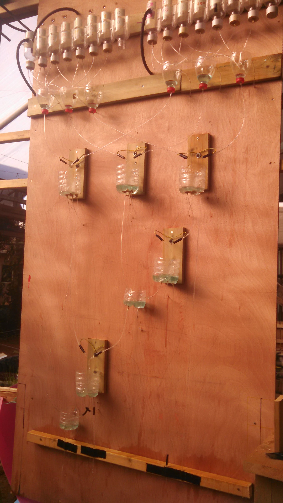

Teaching
I love teaching students math and engineering, and I am lucky to have had the opportunity to teach students of all ages throughout my time as a student and researcher.
Here are some of my write-ups of lesson plans for school-age students that I have designed.
|
 |
Building Full Adders for middle/high schoolers My first experience building full-adders was on a trip to the Ecological Greenhouse at Kibbutz Ein-Shemer in Israel through MIT's Global Teaching Lab program. There, I worked with students to build a full adder using water-based logic gates (picture on left)! Since I loved building full adders so much, I taught a workshop on building transistor-based full adders to kids while biking across the US on Spokes.
Finite Cellular Automata for grades 1-4 In the fall and winter quarters of 2019-2020, I was an insructor in the Stanford Math Circle for grades 1-4. During the winter quarter, my co-instructor, Felipe Hernandez, and I designed and taught a this curriculum on finite cellular automata.
Workshops in Coding Theory for middle/high-schoolers. These workshops were partially taught in Stanford Splash and Stanford Math Circle, and designed for my final project in CS250.
|
Recently I've been working more with underserved high school students on math. Right now, I mentor for high-school Algebra students through the Oakland Serves program. During my time at Stanford, I tutored high school students at Live in Peace. During my junior and senior years at MIT, I taught freshman multivariable calculus enrichement seminars for Seminar XL.
Here is one of my favorite pieces on math education: A Mathematician's Lament.
“A good problem is something you don’t know how to solve.” - Paul Lockhart
|